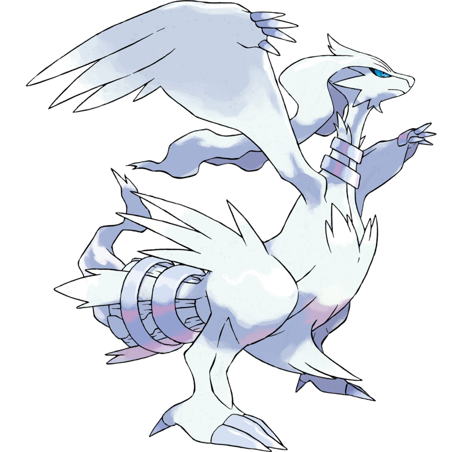

<ion-app>
  <ion-split-pane when="sm" content-id="main-content">
    <ion-menu content-id="main-content">
      <ion-header>
        <ion-toolbar color="primary">
          <ion-title>Menu</ion-title>
        </ion-toolbar>
      </ion-header>
  
      <ion-content>
        <ion-list> 
          <ion-list-header>
            <h2 class="subtitulo">Bienvenido</h2>
          </ion-list-header>

          <ion-menu-toggle auto-hide="false">
            <ion-item *ngFor="let alumno of alumnos">
              <ion-avatar slot="start">
                
              </ion-avatar>
              <ion-label>
                <h2 class="normal"> {{alumno.nombre}} </h2>
                <h3 class="normal"> {{alumno.rut}} </h3>
                <h3 class="normal">{{alumno.email}}</h3>
              </ion-label>
            </ion-item>
            <ion-item button (click)="startScan()">
              <ion-icon name="checkmark-done-circle-outline"></ion-icon>
              <ion-label> Registrar asistencia </ion-label>
            </ion-item>
            <ion-item button (click)="logout()">
              <ion-icon name="exit-outline"></ion-icon>
              <ion-label> Cerrar sesion</ion-label>
            </ion-item>
          </ion-menu-toggle>
        </ion-list>
      </ion-content>
    </ion-menu>
  
    <div class="ion-page" id="main-content">
      <ion-header>
        <ion-button routerLink="/home" color="tertiary">Volver a Inicio</ion-button>
        <ion-toolbar>
          
          <ion-buttons slot="start">
            <ion-menu-toggle>
              <ion-button>
                <ion-icon slot="icon-only" name="menu"></ion-icon>
              </ion-button>
            </ion-menu-toggle>
          </ion-buttons>
          <ion-title>Panel de Control</ion-title>
        </ion-toolbar>
      </ion-header>

      <ion-content class="ion-padding">
        <h1>Main Content</h1>
        <ion-item *ngIf="scannedResult" >
          <ion-label class="ion-text-wrap">Scanned Result: {{scannedResult}}</ion-label>
        </ion-item>
      </ion-content>
    </div>
  </ion-split-pane>
  </ion-app>